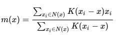

Unsupervised Learning
- Datapoints do not have any outcomes, or target is unknown.
- We are interested in the structure of the data or the patterns within the data.
-
Types:
-
Clustering:
Algorithm like:
- K-Means
- Hierarchical Agglomerative Clustering
- DBSCAN
- Mean shift
-
Dimensionality Reduction:
Algorithm like:
- PCA
- Non-negative matrix factorization
- They are important because of the curse of dimensionality .
- .. which means that as no of features increases performance gets worse, and cost or the number of training examples required increases.
-
Clustering:
Algorithm like:
-
Many use cases like:
- Classification
- Anomaly Detection
- Customer Segmentation
- Improve Supervised Learning
Clustering
K-Means Clustering
-
Following is the algorithm:
- Take K random points. These are our centroids
- For each point in the dataset, compute the distance of the point with each centroids.
- Each point falls in the cluster of the nearest centroid.
- Now, adjust the centroids. i.e. for each clusters, find new centroids that are mean of points in each clusters.
- Repeat Steps 2, 3 and 4 above until no new points are assigned to a new cluster.
-
Smarter initialization of the centroids:
- Pick first centroid at random.
- k-Means ++ : For the next centroid, pick the farthest distance using the probability distance^2/sum(distance^2) . i.e. for each point we compute the above metric where distance is from the first centroid. Pick the one with max probability. TODO how other centroids are picked.
-
Picking the best cluster:
-
Inertia
: sum of squared distance from each point to its cluster.
sum(x-c)^2
, where x is data points in the cluster and c is the centroid.
- smaller value means tighter cluster.
- but, value is sensitive to no of points in the cluster.
-
Distortion
: average of sum of distance, which is essentially
Interial/no of data points in cluster
.
- This would still mean smaller value mean tigher cluster.
- does not increase as moere points are added
- Of the different models with different values of k, pick the one with best (low) inertia or Distortion .
-
Inertia
: sum of squared distance from each point to its cluster.
sum(x-c)^2
, where x is data points in the cluster and c is the centroid.
-
Interia or Distortion can be used to find the right no of clusters also.
- Inertia and Distortion both decrease with increae in K. (lower is better)
- But in the plot of Inertia/Distortion vs K, there is an elbow or inflection point at which the rate of decrease in inertia or distortion is much less.
- When there is no apparant elbow, there is a method called Silhouette method to help determine the optimal value of K.
from sklearn.cluster import KMeans km = KMeans(n_clusters=3,init='k-means++') km = km.fit(X1) y_predict = km.predict(X2) print(km.interia_)
- Batch mode for k-means can be used by MiniBatchKMeans , that works with random batches of data
Other Clustering Algorithms
-
Distance Metrics:
-
Euclidean Distance:
- The usual geometric distance metric
- Also called L2 distance, because we take 2nd power and sum them and take square root.
- this is more sensitive to curse of dimensionality, compared to cosine distance
-
Manhattan Distance:
- Take difference between the two points in each axis, and add the absolute values.
- Also called L1 distance. Unlike L2, where we take 2nd power and 2nd root after sum, this can be thought of as taking n=1 instead of n=1.
- L1 is always larger than L2, unless they lie on same axis, in which case, they will be same.
- for high number of dimensions, we take L1 distance because it tends to perform better than L2 distance.
-
Cosine Distance
- Take a cosine of the angle between the vectors defined by the two points (the two points between which we need to compare the distance.)
- The distance represents the angle cosine values of vectors to the origin from the points.
- Thus replacing a point with another distant or nearby points, but falling on the same vector as original point to the origin, the cosine distance remains unchanged.
- Cosine distance is better suited for text data, where location of occurrence is less important.
-
Jaccard Distance
- Applies to set, for example word occurrence.
- computed as 1-(intersection of two sets)/(union of two sets)
Hierarchical Agglomerative Clustering
- Very useful in businesses, when we are interested in what subgroups make up the clusters
-
Algorithm:
- Find the closest pair, and merge them into a cluster.
- Find next closest pair, and merge them into a cluster.
- The next pair could be another set of points, or cluster. In case of clusters, merge the clusters into a single cluster.
- The distance between a cluster and a point or another cluster is defined by Linkage Criteria. Most common use cases are taking average of all points in the cluster, or for a point and a cluster, find the minumum distance from the point to the cluster, etc
- Stop when the number of cluster is the required number of clusters. OR, finding the average cluster distance with a predefined threshold. For the average cluster distance concept, the Agglomeration does not stop until the minumum of the average cluster distance is not above the threshold.
-
Linkage Criteria:
- Single Linkage: Miminum pairwise distance between clusters. i.e. for two clusters, it is the distance between the closest points in those clusters. In other words, the minimum possible distance between the clusters. Pros : Clear boundary definition; Con : Affected by outlier easily, and cannot separate cleanly.
- Complete Linkage: Take the maximum distance possible between the points in two clusters. From among those, take the min distance to find which cluster to merge. Pro : Works well with noise or a slight overlap. Con : Tend to break apart a large cluster depending upon where the max point lies.
- Average Linkage: Take average distance. But it can inherit cons of both above methods, while also inheriting pros of the above two methods.
- Ward Linkage: Merges the cluster that tends to minimize the inertia. Pros and cons are again similar to average linkage.
import sklearn.cluster import AgglomerativeClustering agc = AgglomerativeClustering(n_clusters=3, affinity='euclidean', linkage='ward') agc = agc.fit(X) y_predict = agc.predict(Xx)
DBSCAN
- it is true clustering algorithm; there can be points that do not belong to any cluster.
- can handle noise better
- Basic idea is that points in a cluster should belong within certain distance, in a neighborhood
- find core point in high density regions, and expand them with more points.
- Algorithm ends when no more points remain within certain distance of the cluster centroids.
-
Algorithm
-
Inputs required:
- Metric: distance metric
- Epsilon (eps): radius of local neighborhood
- n_clu: if a point has n_clu points in its neighborhood including itself, it can be considered a core point and form its own cluster
-
Any point could have three labels:
- Core: its a core point
- density-reachable: its within the eps neighborhood of a core point, but itself does not qualify for a core point due to less n_clu
- noise: a point that has no-core points in its neighborhood.
-
Pros:
- can find the optimal number of clusters itself
- works very well with irregular shaped cluster
- can handle noise very well
-
Cons:
- requires two parameters, vs other that require one
- two hyperparameter tuning could be difficult
- does not do well with clusters with different density. (single distance metric may not capture different densities)
from sklearn.cluster import DBSCAN db = DBSCAN(eps=3, min_samples=2) db.fit(X) # clusters clusters = db.labels_
There is no predict because of the nature of the algorithm. If we want new data, just call fit again and see labels for cluster assignment. Outliers are assigned -1.
Mean Shift
- similar to k-means, assigns point to nearest cluster density.
- centroid is going to be the most dense point in the cluster, could be anywhere in the cluster.
- density is computed as weighted mean around each point
-
-
Algorithm:
- Choose a point and a window W
- Find the weighted mean in W.
- Shift the centroid of the window to the new mean
- Repeat 2 and 3 above until no local density maximum ("mode") is reached
- Repeat 1-4 for each data points
- Data points that lead to the same mode are grouped together into the same cluster
-
weighted Mean Computed as:

-
Pros:
- model free; no assumption of no or shapes in clusters; can form uneven cluster size, but does not handle weird shapes cluster well
- only 1 parameters; i.e. window size
- robust to outliers
-
Cons:
- result depend on window size
- window selection may be hard
- computationally expensive, mn^2, where m=iterations, n=no of points
from sklearn.cluster import MeanShift ms = MeanShift(bandwidth=3) ms.fit(X) ms.predict(Xx)